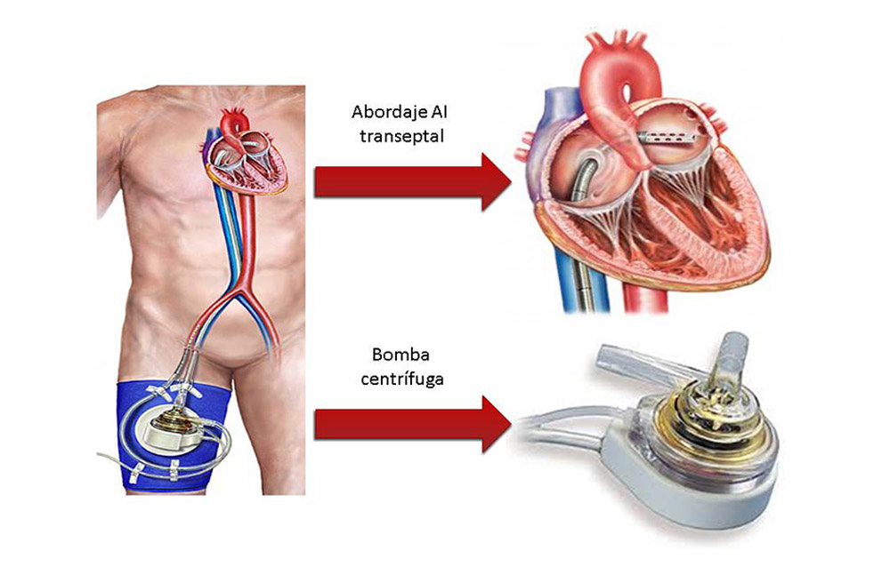
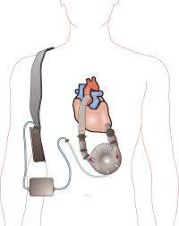
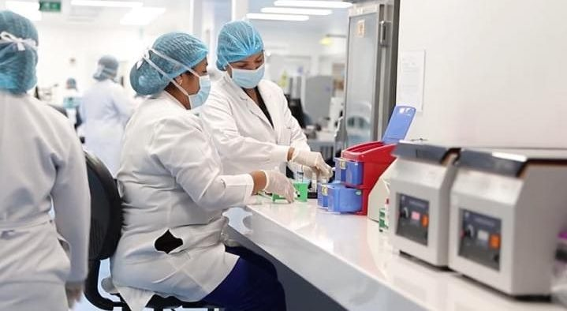

| Técnica utilizada para la fabricacion del Corazón | |
| Bombas de flujo continuo: La mayoría de los corazones artificiales utilizan bombas de flujo continuo para simular el bombeo constante y regular de sangre. Estas bombas son dispositivos mecánicos que pueden ser implantados en el pecho o abdomen del paciente y están diseñados para bombear la sangre de manera continua en lugar de utilizar un latido pulsante como el corazón humano. Estas bombas pueden ser centrífugas o axiales, y su función principal es mover la sangre a través del sistema circulatorio. |  |
| Controladores y baterías: Los corazones artificiales están conectados a un controlador externo que monitorea y controla el funcionamiento de la bomba. El controlador ajusta la velocidad y el flujo de la bomba de acuerdo con las necesidades del paciente. Además, el corazón artificial requiere una fuente de energía, generalmente una batería, para su funcionamiento. Las baterías son recargables y se llevan en una bolsa externa que el paciente puede llevar consigo. |  |
| Es importante tener en cuenta que la fabricación de corazones artificiales es un campo de investigación en constante evolución y que hay otras técnicas y enfoques en desarrollo, como el uso de biomateriales, impresión 3D y terapia génica. Estas técnicas buscan mejorar la funcionalidad, durabilidad y biocompatibilidad de los corazones artificiales en el futuro. |  |